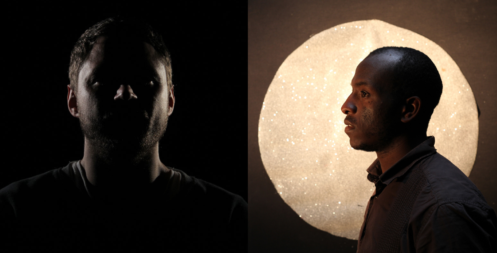
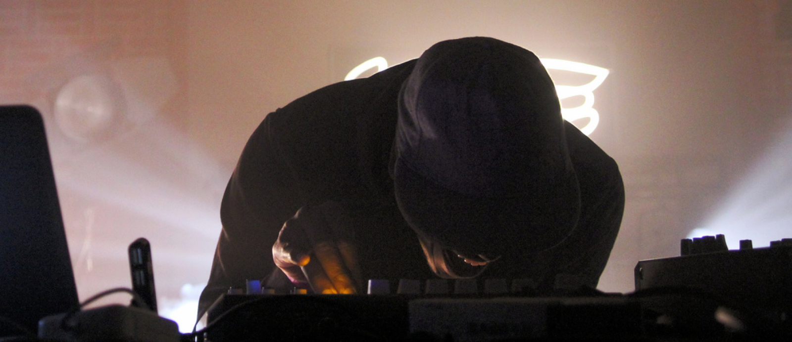
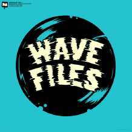

<!DOCTYPE html>
<html lang="en">

    <head>
        <meta charset="utf-8">
        <meta http-equiv="X-UA-Compatible" content="IE=edge,chrome=1">
        <meta name="viewport" content="width=device-width, initial-scale=1.0, maximum-scale=1.0, user-scalable=no" />
        <meta name="description" content="Mix Exchange" />

        <link rel="dns-prefetch" href="http://www.google-analytics.com">
        <link rel="dns-prefetch" href="https://soundcloud.com">

        <title>Mix Exchange</title>

        <link rel="stylesheet" href="css/main.css" type="text/css">

        <script src="js/lib/modernizr-2.6.2.min.js"></script>

        <meta property="og:title" content="Mix Exchange">
        <meta property="og:site_name" content="Mix Exchange">
        <meta property="og:type" content="website">

        <link rel="shortcut icon" href="img/i/icon.png">
        <link rel="apple-touch-icon-precomposed" href="img/i/icon.png">
    </head>

    <header class="site-header">
        <div class="content clearfix">
            <div class="logo l"><a href="/"></a></div>
        </div>
    </header>

    <!-- CONTENT -->

    <div class="pagination clearfix">
        <a rel="tab" href="moresounds-x-dannyscrilla.html" class="btn prev">
            <div class="icon-arrow-left"></div><span>Moresounds-X-Dannyscrilla</span>
        </a>
        <a rel="tab" href="richiekaboogie-x-mynameisjohn.html" class="btn next">
            <div class="icon-arrow-right"></div><span>Richie Kaboogie X mynameisjOhn</span>
        </a>
    </div>

    <div class="feature clearfix">

        <div id="meta-title" style="display:none;">Touchy Subject-x-H-SIK</div>

        <div class="vs">  </div>

        

        <a class="sc-player stream" href="https://soundcloud.com/rudimentaryrecords/mix-exchange-002-touchy-subject-x-h-sik/s-BOuDm"></a>

    </div>

    <div class="row">

        <div class="content clearfix">

            <div class="col-80 l clearfix">
                <div class="col-30 l">
                    <h5 class="bg">Tracklist:</h5>
                    <ul class="tracklist dash">
                        <li>Touchy Subject</li>
                        <li>Touchy Subject - untitled dub</li>
                        <li>Touchy Subject - Left Twin</li>
                        <li>Touchy Subject - Rip it up Ft. Simon Mandala</li>
                        <li>Touchy Subject - The Cracken</li>
                        <li>Touchy Subject - Travellin</li>
                        <li>Touchy Subject - Dancing Bully</li>
                        <li>Touchy Subject - Social Six</li>
                    </ul>
                    <ul class="tracklist">
                        <li>H-SIK</li>
                        <li>H-SIK - Intro Beat</li>
                        <li>H-SIK - Simple Word</li>
                        <li>H-SIK - INsert</li>
                        <li>H-SIK - Composite</li>
                        <li>H-SIK - No Promises</li>
                        <li>H-SIK - Check one 2</li>
                        <li>H-SIK - Sinistarr = Beat1</li>
                        <li>H-SIK - One Shot</li>
                        <li>H-SIK - Sonic rage</li>
                        <li>H-SIK - 170813</li>
                        <li>H-SIK - Ultimate T</li>
                        <li>H-SIK - Close to Me dub</li>
                        <li>H-SIK - Eloquent Motion</li>
                    </ul>

                    
                    <div class="credit">Card Board Boss Logo</div>
                </div>

                <div class="col-70 r">
                    <h3 id="meta-desc">London meets Haarlem on the second in the series. Delight to welcome <b>Tocuhy Subject</b> (CardBoardBoss.com) and <b>H-Sik</b> (Black Arce) to the exchange. Although living in very different city these two are drawn together by the continaully growing web community that seems, in some ways, to revolve around a particular bpm. The pair discuss production, influences and therapy. </h3>

                    <ul class="answers">

                        <li>
                            <p><b>H-Sik:</b> <span class="question">"Rip It Up" Ft. Simon Mandala features in the mix, could you tell me the story behind that collaboration? How did you know him?</span></p>
                            <p><b>Touchy Subject:</b> Simon Mandela became a regular at the Real Roots nights, I only really saw him at the events, but then occasionally at an after party we would continue with the vocal experiments over unreleased productions. He likes to travel, walk the world and gain experiences - he is a hard man to track down. I believe he is currently living in Spain and setting up a studio there.</p>
                        </li>

                        <li>
                            <p><b>H-Sik:</b> <span class="question">I presume dub music is one of your biggest influences, right? Is there another genre that tailors your sound?</span></p>
                            <p><b>Touchy Subject:</b> Dub is a massive influence in my life, It has strength in areas I find a lot of other music doesn’t. I went to university with Sattamann who gave me strong grounding in the dancehall and sound system culture. I’m from a hip hop background myself, jazz and funk too. I love Tru-Thoughts , Ninja Tune and Stones Throw… drum and bass and beats always get me going. Lots of friends with lots of different styles influence me and my production.</p>
                        </li>

                        <li>
                            <p><b>H-Sik:</b> <span class="question">Could explain your process when sending a delay or reverb effect to samples or other parts of your track? And do you use hardware or digital to produce or both? </span></p>
                            <p><b>Touchy Subject:</b> I love reverb, even just listening to your own voice through it. I like to listen to almost all samples through a variety of different reverbs, I get to use a lexicon outboard to do a few bits like that. I run samples through simple effects like analogue tape and EQ’s before it reaches the reverb.</p>
                        </li>

                        <li>
                            <p><b>H-Sik:</b> <span class="question">I hear that you are part of a collective, is that right? They also organised some events</span></p>
                            <p><b>Touchy Subject:</b> Yes! cardboardboss. It’s a collective of complete twats that have similar interests, we all went to art uni together and have been working in agencies in recent years. We organise events, create artwork, come up with ideas for future projects. We are currently building a scoop sound system and have some music videos underway. check <a href="http://cardboardboss.com/">cardboardboss.com</a></p>
                        </li>

                        <li class="quote">
                            “I like to penetrate with something that lifts the soul or challenges it.”
                        </li>

                        <li>
                            <p><b>H-Sik:</b> <span class="question">Music is kind of therapy, do you think the same? And is that the case with your own music?</span></p>
                            <p><b>Touchy Subject:</b> I find making music is very relaxing and it keeps me sane. I suppose some of my music could be seen as therapeutic. I have different projects going on that might speak to people differently. My new project Aurora dee Raynes is a whole other sound that people might not expect from me.</p>
                        </li>

                        <li>
                            <p><b>H-Sik:</b> <span class="question">How do you think your music can impact the audience? Could you define your music?</span></p>
                            <p><b>Touchy Subject:</b> I make most of my music with the intention for it to be played on a good sound system at a club or festival. But I also want want people to have a personal relationship with a tune.</p>
                            <p>Defining the sound is hard. It’s a mixture of ideas, but generally it starts with the drums and builds from there. I like to penetrate with something that lifts the soul or challenges it.</p>
                        </li>

                        <li>
                            <p><b>H-Sik:</b> <span class="question">Do you feel confident releasing your music out right now? And can you give us any insight into future projects, if you mind?</span></p>
                            <p><b>Touchy Subject:</b> Its always been an aim to release something I can look back on in years and still be proud of. Id say I’m only just pin pointing my own sound. It isn’t restricted to BPMs, and like a lot of modern music it mixes elements from things I find inspiring.</p>
                            <p>The future is quite exciting as I think there is still a lot of room for something new, I’m not settled on a style and think this will always move with my experiences in life. I like to turn off all layers in a track except for drums and bass lines and still nod and be pleased with the beats.</p>
                        </li>

                        <li>
                            <p><b>H-Sik:</b> <span class="question">What it is your best hobby, not musical, that also inspires your production?</span></p>
                            <p><b>Touchy Subject:</b> My other favourite pastime is video, animation and illustration. I spend a lot of time in After effects and film programs, that shit bangs like sound. Inspirations for me is art and BBQs with good conversations and friends.</p>
                        </li>

                        <li>
                            <p><b>H-Sik:</b> <span class="question">Do you believe that electronic music can carry a message and can be utilised for social change? </span></p>
                            <p><b>Touchy Subject:</b> I think tracks in the past have had this ability. I’m sure people realise true feelings through music, some people dig lyrics as they are easier to understand but I think the music itself is a universal language and is bigger than words.</p>
                        </li>

                    </ul>

                </div>

            </div>

        </div>

        

        <div class="content clearfix">

            <div class="col-80 r clearfix">
                <div class="col-70 l">

                    <ul class="answers">

                        <li>
                            <p><b>Touchy Subject:</b> <span class="question">Do you have to be in a certain mind set when you make music, do different moods bring out different productions?</span></p>
                            <p><b>H-Sik:</b> I am always spontaneous in my music. It is something, clearly related to my mood. I think sometimes music is translating your personality. The translation is a different approach of certain vibrations. </p>
                            <p>I would say, I tend to not think to much about bpm, which is not the case right now. I would definitely show other side of my production, that is not really related to the dance domain.</p>
                        </li>

                        <li>
                            <p><b>Touchy Subject:</b> <span class="question">When you make music and finish a track, how do you review it?</span></p>
                            <p><b>H-Sik:</b> I am not too confident about that. It is a real and painful experience deciding when something is finished.  I think and I am not the one who can say that, a track is always "not" finished, you can always improve on something. On a other hand, the notion of being spontaneous and having a special vibe to a track can be great.</p>
                        </li>

                        <li>
                            <p><b>Touchy Subject:</b> <span class="question"> I have been listening to your stuff with Moresounds a lot, how do you go about writing music together?</span></p>
                            <p><b>H-Sik:</b> Not that much actually, I am not secure with my own stuff to be honest, but my dude (Moresounds) knows it. But the silly bastard sends me a tonne of material every week, haha. In terms of writing music together, we've tried one series before Ghetto Dub, but it did not work. Generally, it works via dropbox, same as many people these days. </p>
                        </li>

                        <li>
                            <p><b>Touchy Subject:</b> <span class="question"> What gets you going in a club and what music do you listen to in more chilled times?</span></p>
                            <p><b>H-Sik:</b> I am not really into the club "scene" as such. I like it, but it is not my main reason for getting into this type of music. I found my feet in the clubs in Amsterdam, because of people like Jay Scarlett and Cimannam pushing the beat scene. Cinnaman enforced that "scene" with the beat dimension imprint. So, I would have to say the beat scene brings me to the club really.</p>
                            <p>I am listening to a lot of my Ivorian and African music via the streaming player, it is a tonne of naive energy that I would love to translate into my music.</p>
                        </li>

                        <li>
                            <p><b>Touchy Subject:</b> <span class="question"> What equipment do you use, and do you have a method to your production?</span></p>
                            <p><b>H-Sik:</b> Pretty simple, PC, little mixer, spring reverb, analog delay, percussion, and little synth. I need more synths by the way, donations welcome, don't hesitate to send a LOT of Money. ;)</p>
                        </li>

                        <li>
                            <p><b>Touchy Subject:</b> <span class="question"> What drives your music, is there anything in particular?</span></p>
                            <p><b>H-Sik:</b> It is more about the texture of the sound and alot of the happy accidents that a jam can deliver for you.  Those kind of moments are addictive and I always want more. </p>
                        </li>

                        <li>
                            <p><b>Touchy Subject:</b> <span class="question"> What gets you excited in music?</span></p>
                            <p><b>H-Sik:</b> The weirdness of it. I like a track that could be made in a non traditional way, i think this creates great music that sticks in your memory. </p>
                        </li>

                        <li>
                            <p><b>Touchy Subject:</b> <span class="question"> What have you got coming up this year? releases/projects? how did you get involved with?</span></p>
                            <p><b>H-Sik:</b> New Ep on black acre soon, an Ep with Chrissy Murderbot, there is an Error broadcast Ep in the pipelines plus a remix for my man Sertone.  I'm also hoping for a SHTRAK ep with the crew.</p>
                        </li>

                    </ul>

                </div>

                <div class="col-30 r">
                    
                    <div class="credit">Moresounds + H-SIK - Shtrakoss Riddim <br />For Basserk Records</div>
                </div>
            </div>

        </div>

    </div>

    <!-- END CONTENT -->


    <div class="row share">

        <div class="content clearfix">

            <h2>Share</h2>
            <ul class="social clearfix">
                <a id="googleplus-share-link" onclick="window.open (this.href, 'child', 'height=400,width=600'); return false" href="">
                    <li class="icon-googleplus"></li>
                </a>
                <a id="facebook-share-link" onclick="window.open (this.href, 'child', 'height=400,width=600'); return false" href="">
                    <li class="icon-facebook"></li>
                </a>
                <a id="twitter-share-link" onclick="window.open (this.href, 'child', 'height=400,width=600'); return false" href="">
                    <li class="icon-twitter"></li>
                </a>
            </ul>
        </div>

    </div>

    <footer class="site-footer row">

        <div class="content clearfix">


            <div class="content clearfix">

                <h2>Thanks for stopping by:</h2>

                <p>© 2014 A Rudimentary Records project.</p>
                <ul class="social clearfix">
                    <a href="https://www.facebook.com/pages/Rudimentary-Records/261080428541">
                        <li class="icon-facebook"> <span>Facebook</span></li>
                    </a>
                    <a href="https://twitter.com/RudimentaryRec">
                        <li class="icon-twitter"> <span>Twitter</span></li>
                    </a>
                    <a href="https://soundcloud.com/rudimentaryrecords">
                        <li class="icon-soundcloud"> <span>Soundcloud</span></li>
                    </a>
                </ul>

            </div>

    </footer>

    <script src="https://code.jquery.com/jquery-1.9.1.min.js" integrity="sha256-wS9gmOZBqsqWxgIVgA8Y9WcQOa7PgSIX+rPA0VL2rbQ=" crossorigin="anonymous"></script>
    <script src="js/plugins.js"></script>
    <script src="js/script.js"></script>

    <script type="text/javascript">

        var _gaq = _gaq || [];
        _gaq.push(['_setAccount', 'UA-59299441-1']);
        _gaq.push(['_trackPageview']);

        (function () {
            var ga = document.createElement('script'); ga.type = 'text/javascript'; ga.async = true;
            ga.src = ('https:' == document.location.protocol ? 'https://ssl' : 'http://www') + '.google-analytics.com/ga.js';
            var s = document.getElementsByTagName('script')[0]; s.parentNode.insertBefore(ga, s);
        })();

    </script>

    </body>

</html>
